Available domains#
Mapped domains (single patch).
Module providing mapping classes for single-patch geometries used by Struphy.
This module includes classes such as Tokamak, GVECunit, DESCunit, IGAPolarCylinder, IGAPolarTorus, and Cuboid. Mappings transform reference coordinates to Cartesian coordinates and integrate with spline-based grid constructions and field-line tracing.
- class struphy.geometry.domains.Tokamak(equilibrium: AxisymmMHDequilibrium | None = None, num_elements: tuple = (8, 32), degree: tuple = (2, 3), psi_power: float = 0.75, psi_shifts: tuple = (0.01, 2.0), r_min: float = 0.0, xi_param: str = 'equal_angle', r0: float = 0.3, num_elements_pre: tuple = (64, 256), p_pre: tuple = (3, 3), tor_period: int = 1)[source]#
Bases:
PoloidalSplineTorusMappings for Tokamak MHD equilibria constructed via field-line tracing of a poloidal flux function \(\psi\).
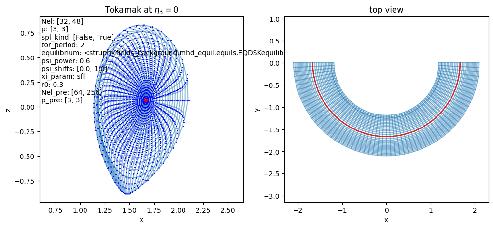
- Parameters:
equilibrium (struphy.fields_background.base.AxisymmMHDequilibrium) – The axisymmetric MHD equilibrium for which a flux-aligned grid shall be constructed (default: AdhocTorus).
num_elements (tuple[int]) – Number of cells in (radial, angular) direction to be used in spline mapping (default: [8, 32]).
degree (tuple[int]) – Spline degrees in (radial, angular) direction to be used in spline mapping (default: [2, 3]).
psi_power (float) – Parametrization of radial flux coordinate \(\eta_1=\psi_{\mathrm{norm}}^p\), where \(\psi_{\mathrm{norm}}\) is the normalized poloidal flux (default: 0.75).
psi_shifts (tuple[float]) – Start and end shifts of polidal flux in % –> cuts away regions at the axis and edge (default: [2., 2.])
r_min (float) – Inner radius of poloidal section (optional, default: 0.0). If >0.0, then r_0 = r_min.
xi_param (str) – Parametrization of angular coordinate (“equal_angle”, “equal_arc_length” or “sfl” (straight field line), default: “equal_angle”).
r0 (float) – Initial guess for radial distance from axis used in Newton root-finding method (default: 0.3).
num_elements_pre (tuple[int]) – Number of cells in (radial, angular) direction of pre-mapping needed for equal_arc_length and sfl parametrizations (default: [64, 256]).
p_pre (tuple[int]) – Spline degrees in (radial, angular) direction of pre-mapping needed for equal_arc_length and sfl parametrizations (default: [3, 3]).
tor_period (int) – Toroidal periodicity built into the mapping: \(\phi=2\pi\,\eta_3/\mathrm{torperiod}\) (default: 1 –> full torus).
Note
- Regarding r_min and psi_shifts:
If r_min is left at 0.0, psi_shifts defines both the inner and outer boundaries of the computational domain in terms of the normalized flux coordinate psi. When r_min > 0.0, however, psi_shifts[0] is no longer used. Instead, the code computes the flux value corresponding to the physical radius r_min (measured from the magnetic axis), which then defines the inner boundary of the domain. This allows the user to specify the inner boundary using a more intuitive physical radius rather than a flux coordinate. The outer boundary is still controlled by psi_shifts[1].
In the parameter .yml, use the following in the section geometry:
geometry : type : Tokamak Tokamak : num_elements : [8, 32] # number of poloidal grid cells for spline mapping, >degree degree : [3, 3] # poloidal spline degrees for spline mapping, >1 psi_power : 0.7 # parametrization of radial flux coordinate eta1=psi_norm^psi_power, where psi_norm is normalized flux psi_shifts : [2., 2.] # start and end shifts of polidal flux in % --> cuts away regions at the axis and edge r_min : 0.0 # Inner radius of poloidal section. If >0.0, then r_0 = r_min. xi_param : equal_angle # parametrization of angular coordinate (equal_angle, equal_arc_length or sfl (straight field line)) r0 : 0.3 # initial guess for radial distance from axis used in Newton root-finding method for flux surfaces num_elements_pre : [64, 256] # number of poloidal grid cells of pre-mapping needed for equal_arc_length and sfl p_pre : [3, 3] # poloidal spline degrees of pre-mapping needed for equal_arc_length and sfl tor_period : 1 # toroidal periodicity built into the mapping: phi = 2*pi * eta3 / tor_period
- class struphy.geometry.domains.GVECunit(gvec_equil=None)[source]#
Bases:
SplineThe mapping from pygvec, computed by the GVEC MHD equilibrium code.
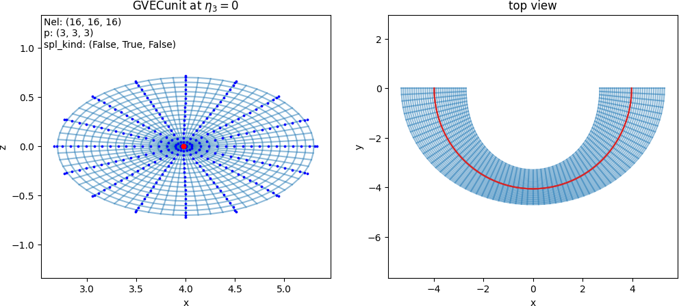
- Parameters:
gvec_equil (struphy.fields_background.equils.GVECequilibrium) – GVEC MHD equilibrium object.
Note
In the parameter .yml, use the following in the section geometry:
geometry : type : GVECunit
- class struphy.geometry.domains.DESCunit(desc_equil=None)[source]#
Bases:
SplineThe mapping \((\rho, \theta,\zeta) \mapsto (X, Y, Z)\) to Cartesian coordinates computed by the DESC MHD equilibrium code.
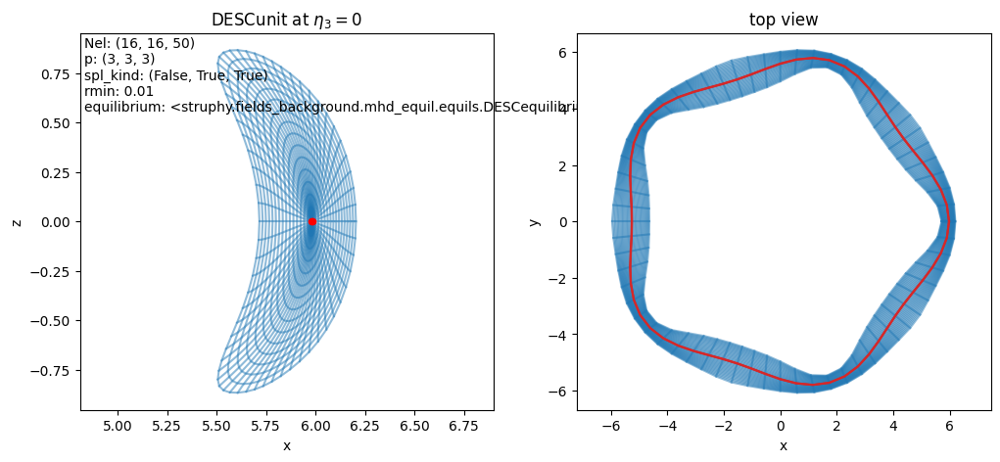
- Parameters:
desc_equil (struphy.fields_background.equils.DESCequilibrium) – DESC MHD equilibrium object.
Note
In the parameter .yml file, use the following:
geometry : type : DESCunit
- class struphy.geometry.domains.IGAPolarCylinder(num_elements: tuple[int] = (8, 24), degree: tuple[int] = (2, 3), a: float = 1.0, Lz: float = 4.0)[source]#
Bases:
PoloidalSplineStraightA cylinder with the cross section approximated by a spline mapping.
\[\begin{split}F: \begin{bmatrix}\eta_1\\ \eta_2\\ \eta_3\end{bmatrix}\mapsto \begin{bmatrix} \,\,x= &\sum_{ij} c^x_{ij} N_i(\eta_1) N_j(\eta_2)\approx a\,\eta_1\cos(2\pi\eta_2)\,\,\\ \,\,y= &\sum_{ij} c^y_{ij} N_i(\eta_1) N_j(\eta_2)\approx a\,\eta_1\sin(2\pi\eta_2)\,\,\\ \,\,z= &L_z\eta_3\,\,\end{bmatrix}\end{split}\]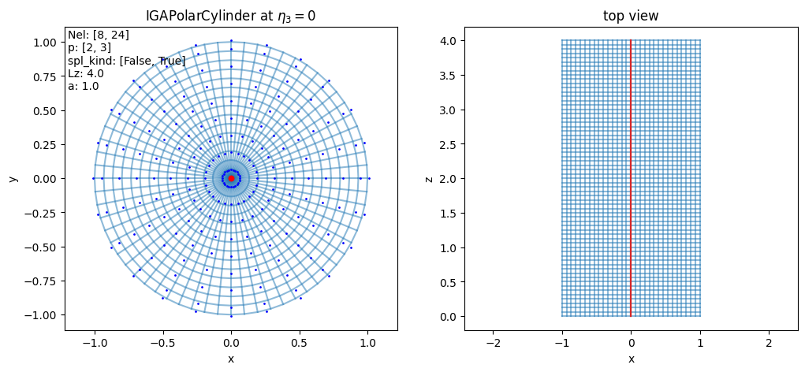
- Parameters:
num_elements (list[int]) – Number of cells in (radial, angular) direction used for spline mapping (default: [8, 24]).
degree (list[int]) – Splines degrees in (radial, angular) direction used for spline mapping (default: [2, 3]).
a (float) – Radius of cylinder (default: 1.).
Lz (float) – Length of cylinder (default: 4.).
Note
In the parameter .yml, use the following in the section geometry:
geometry : type : IGAPolarCylinder IGAPolarCylinder : num_elements : [8, 24] # number of poloidal grid cells, >degree degree : [3, 3] # poloidal spline degree, >1 Lz : 6. # Length in third direction a : 1. # minor radius
- class struphy.geometry.domains.IGAPolarTorus(num_elements: tuple[int] = (8, 24), degree: tuple[int] = (2, 3), a: float = 1.0, R0: float = 3.0, sfl: bool = False, tor_period: int = 3)[source]#
Bases:
PoloidalSplineTorusA torus with the poloidal cross-section approximated by a spline mapping.
\[\begin{split}F: \begin{bmatrix}\eta_1\\ \eta_2\\ \eta_3\end{bmatrix}\mapsto \begin{bmatrix} \,\,x= &\sum_{ij} c^{R}_{ij} N_i(\eta_1) N_j(\eta_2) \cos(\phantom{-}2\pi\eta_3) \approx \left[a\,\eta_1\cos(2\pi\theta(\eta_1, \eta_2)) + R_0\right]\cos(\phantom{-}2\pi\eta_3)\,\,\\ \,\,y= &\sum_{ij} c^{R}_{ij} N_i(\eta_1) N_j(\eta_2) \sin(-2\pi\eta_3)\approx \left[a\,\eta_1\cos(2\pi\theta(\eta_1, \eta_2)) + R_0\right]\sin(-2\pi\eta_3)\,\,\\ \,\,z= &\sum_{ij} c^{Z}_{ij} N_i(\eta_1) N_j(\eta_2)\approx a\,\eta_1\sin(2\pi\theta(\eta_1, \eta_2))\,\,\end{bmatrix}\end{split}\]The angular parametrization \(\theta(\eta_1, \eta_2)\) can either be equal angle or straight field line (see parameters below).
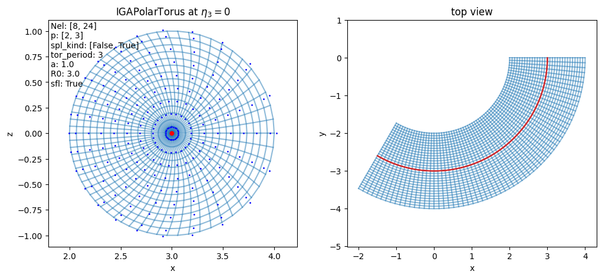
- Parameters:
num_elements (tuple[int]) – Number of cells in (radial, angular) direction used for spline mapping (default: [8, 24]).
degree (tuple[int]) – Splines degrees in (radial, angular) direction used for spline mapping (default: [2, 3]).
a (float) – Minor radius of torus (default: 1.).
R0 (float) – Major radius of torus (default: 3.).
tor_period (int) – Toroidal periodicity built into the mapping: \(\phi=2\pi\,\eta_3/\mathrm{torperiod}\) (default: 3 –> one third of a torus).
sfl (bool) – Whether to use straight field line coordinates (default: False).
Note
In the parameter .yml, use the following in the section geometry:
geometry : type : IGAPolarTorus IGAPolarTorus : num_elements : [8, 24] # number of poloidal grid cells, >degree degree : [3, 3] # poloidal spline degree, >1 a : 1. # minor radius R0 : 3. # major radius tor_period : 2 # toroidal periodicity built into the mapping: phi = 2*pi * eta3 / tor_period sfl : False # whether to use straight field line coordinates (particular theta parametrization)
- class struphy.geometry.domains.Cuboid(l1: float = 0.0, r1: float = 1.0, l2: float = 0.0, r2: float = 1.0, l3: float = 0.0, r3: float = 1.0)[source]#
Bases:
DomainSlab geometry (Cartesian coordinates).
\[\begin{split}F: \begin{bmatrix}\eta_1\\ \eta_2\\ \eta_3\end{bmatrix}\mapsto \begin{bmatrix} \,\,x= &l_1 + (r_1 - l_1)\,\eta_1\,\,\\ \,\,y= &l_2 + (r_2 - l_2)\,\eta_2\,\,\\ \,\,z= &l_3 + (r_3 - l_3)\,\eta_3\,\,\end{bmatrix}\end{split}\]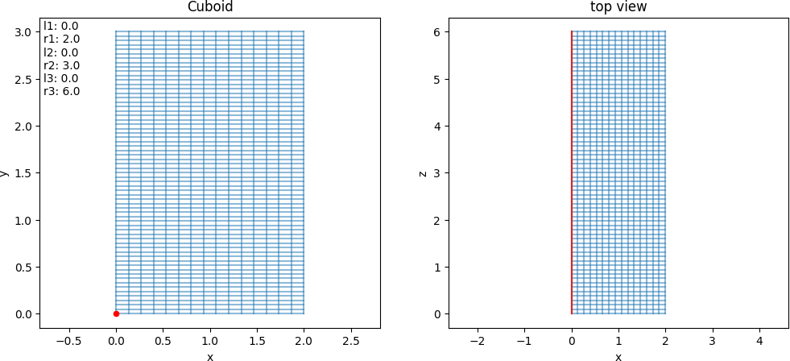
- Parameters:
l1 (float) – Start of x-interval (default: 0.).
r1 (float) – End of x-interval, r1>l1 (default: 1.).
l2 (float) – Start of y-interval (default: 0.).
r2 (float) – End of y-interval, r2>l2 (default: 1.).
l3 (float) – Start of z-interval (default: 0.).
r3 (float) – End of z-interval, r3>l3 (default: 1.).
- class struphy.geometry.domains.Orthogonal(Lx: float = 2.0, Ly: float = 3.0, alpha: float = 0.1, Lz: float = 6.0)[source]#
Bases:
DomainSlab geometry with orthogonal mesh distortion.
\[\begin{split}F: \begin{bmatrix}\eta_1\\ \eta_2\\ \eta_3\end{bmatrix}\mapsto \begin{bmatrix} \,\,x= &L_x\,\left[\,\eta_1 + \alpha\sin(2\pi\,\eta_1)\right]\,\,\\ \,\,y= &L_y\,\left[\,\eta_2 + \alpha\sin(2\pi\,\eta_2)\right]\,\,\\ \,\,z= &L_z\,\eta_3\,\,\end{bmatrix}\end{split}\]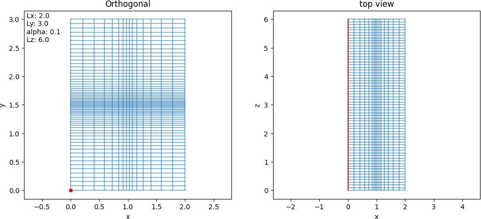
- Parameters:
Lx (float) – Length of x-interval (default: 2.).
Ly (float) – Length of y-interval (default: 3.).
alpha (float) – Distortion factor (default: 0.1).
Lz (float) – Length of z-interval (default: 6.).
Note
In the parameter .yml, use the following in the section geometry:
geometry : type : Orthogonal Orthogonal : Lx : 2. # length in x-direction Ly : 2. # length in y-direction alpha : .1 # x-distortion and y-distortion Lz : 1. # length in z-direction
- class struphy.geometry.domains.Colella(Lx: float = 2.0, Ly: float = 3.0, alpha: float = 0.1, Lz: float = 6.0)[source]#
Bases:
DomainSlab geometry with Colella mesh distortion.
\[\begin{split}F: \begin{bmatrix}\eta_1\\ \eta_2\\ \eta_3\end{bmatrix}\mapsto \begin{bmatrix} \,\,x= &L_x\,\left[\,\eta_1 + \alpha\sin(2\pi\,\eta_1)\sin(2\pi\,\eta_2)\,\right]\,\,\\ \,\,y= &L_y\,\left[\,\eta_2 + \alpha\sin(2\pi\,\eta_2)\sin(2\pi\,\eta_1)\,\right]\,\,\\ \,\,z= &L_z\,\eta_3\,\,\end{bmatrix}\end{split}\]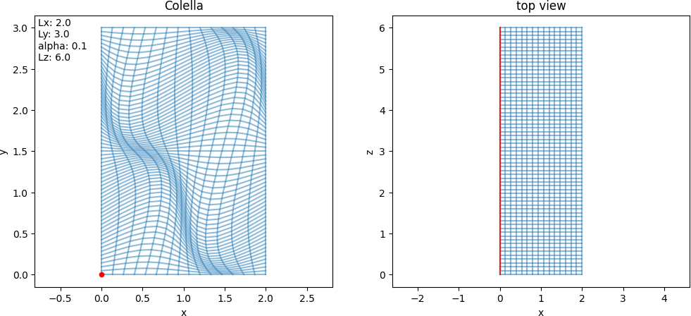
- Parameters:
Lx (float) – Length of x-interval (default: 2.).
Ly (float) – Length of y-interval (default: 3.).
alpha (float) – Distortion factor (default: 0.1).
Lz (float) – Length of z-interval (default: 6.).
Note
In the parameter .yml, use the following in the section geometry:
geometry : type : Colella Colella : Lx : 2. # length in x-direction Ly : 2. # length in y-direction alpha : .1 # distortion factor Lz : 1. # length in third direction
- class struphy.geometry.domains.HollowCylinder(a1: float = 0.2, a2: float = 1.0, Lz: float = 4.0, poc: int = 1)[source]#
Bases:
DomainCylinder with possible hole around the axis.
\[\begin{split}F: \begin{bmatrix}\eta_1\\ \eta_2\\ \eta_3\end{bmatrix}\mapsto \begin{bmatrix} \,\,x= &\left[\,a_1 + (a_2-a_1)\,\eta_1\,\right]\cos(2\pi\,\eta_2 / poc)\,\,\\ \,\,y= &\left[\,a_1 + (a_2-a_1)\,\eta_1\,\right]\sin(2\pi\,\eta_2 / poc)\,\,\\ \,\,z= &L_z\,\eta_3\,\,\end{bmatrix}\end{split}\]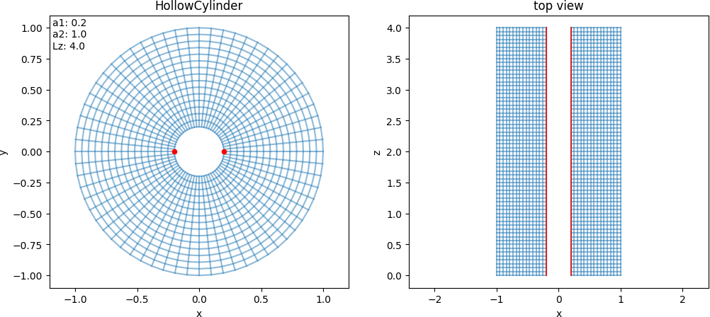
- Parameters:
a1 (float) – Inner radius of cylinder (default: 0.2).
a2 (float) – Outer radius of cylinder (default: 1.0).
Lz (float) – Length of cylinder (default: 4.)
poc (int) – Which periodicity used in the mapping, i.e. :math: theta = 2*pi*eta_2 / mathrm{poc} (piece of cake) (default: 1).
Note
In the parameter .yml, use the following in the section geometry:
geometry : type : HollowCylinder HollowCylinder : a1 : .2 # inner radius a2 : 1. # outer radius Lz : 4. # length of cylinder poc: 2. # periodicity of theta used in the mapping
- class struphy.geometry.domains.PoweredEllipticCylinder(rx: float = 1.0, ry: float = 2.0, Lz: float = 6.0, s: float = 0.5)[source]#
Bases:
DomainCylinder with elliptic cross section and radial power law.
\[\begin{split}F: \begin{bmatrix}\eta_1\\ \eta_2\\ \eta_3\end{bmatrix}\mapsto \begin{bmatrix} \,\,x= &r_x\,\eta_1^s\cos(2\pi\,\eta_2)\,\,\\ \,\,y= &r_y\,\eta_1^s\sin(2\pi\,\eta_2)\,\,\\ \,\,z= &L_z\,\eta_3\,\,\end{bmatrix}\end{split}\]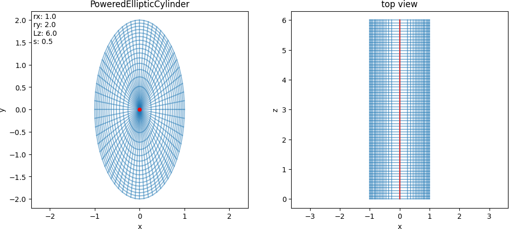
- Parameters:
rx (float) – Radius in x-direction (default: 1.0).
ry (float) – Radius in y-direction (default: 2.0).
Lz (float) – Length in z-direction (default: 6.0).
s (float) – Power of radial coordinate (default: 0.5).
Note
In the parameter .yml, use the following in the section geometry:
geometry : type : PoweredEllipticCylinder PoweredEllipticCylinder : rx : 1. # axis length in x-direction ry : 2. # axis length in y-direction Lz : 4. # length in z-direction s : .5 # power of radial coordinate
- class struphy.geometry.domains.HollowTorus(a1: float = 0.1, a2: float = 1.0, R0: float = 3.0, sfl: bool = False, pol_period: int = 1, tor_period: int = 3)[source]#
Bases:
DomainTorus with possible hole around the magnetic axis (center of the smaller circle).
\[\begin{split}F: \begin{bmatrix}\eta_1\\ \eta_2\\ \eta_3\end{bmatrix}\mapsto \begin{bmatrix} \,\,x= &\lbrace\left[\,a_1 + (a_2-a_1)\,\eta_1\,\right]\cos\left[\theta(\eta_1,\eta_2)\right]+R_0\rbrace\cos(\phantom{-}2\pi\,\eta_3 / n)\,\,\\ \,\,y= &\lbrace\left[\,a_1 + (a_2-a_1)\,\eta_1\,\right]\cos\left[\theta(\eta_1,\eta_2)\right]+R_0\rbrace\sin(-2\pi\,\eta_3 / n)\,\,\\ \,\,z= &\left[\,a_1 + (a_2-a_1)\,\eta_1\,\right]\sin\left[\theta(\eta_1,\eta_2)\right]\,\,\end{bmatrix}\end{split}\]with the following possible poloidal angle parametrizations:
\[ \begin{align}\begin{aligned}&\theta(\eta_1,\eta_2) = \left\{\begin{aligned}\\& 2\pi\,\eta_2\,, \quad &&\textnormal{if}\quad \textnormal{sfl}=\textnormal{False}\,,\\&2\arctan\left[\sqrt{\frac{1 + \epsilon(\eta_1)}{1 - \epsilon(\eta_1)}}\,\tan\left(\pi\,\eta_2\right)\right]\quad &&\textnormal{if}\quad \textnormal{sfl}=\textnormal{True}\,,\\&\qquad \textrm {with}\qquad \epsilon(\eta_1) = \frac{a_1 + (a_2-a_1)\,\eta_1}{R_0}\,. \end{aligned}\right.\end{aligned}\end{align} \]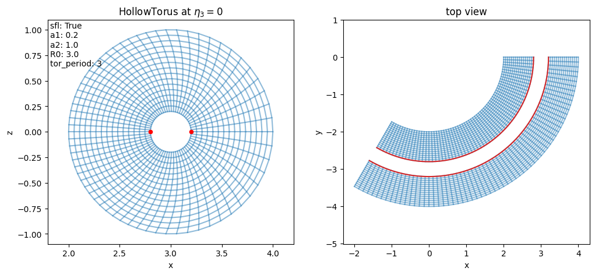
- Parameters:
a1 (float) – Inner minor radius of hollow torus (default: 0.2).
a2 (float) – Outer minor radius of hollow torus (default: 1.0).
R0 (float) – Major radius of torus (default: 3.0).
sfl (bool) – Whether to use straight field line coordinates (True) or not (False) (default: False).
pol_period (int) – Which periodicity used in the mapping, i.e. :math: theta = 2*pi*eta_2 / mathrm{pol_period} (piece of cake) (default: 1, only for sfl=False).
tor_period (int) – Toroidal periodicity built into the mapping: \(\phi=2\pi\,\eta_3/\mathrm{torperiod}\) (default: 3 –> one third of a torus).
Note
In the parameter .yml, use the following in the section geometry:
geometry : type : HollowTorus HollowTorus : a1 : 0.2 # inner radius a2 : 1.0 # minor radius R0 : 3.0 # major radius sfl : False # straight field line coordinates? pol_period: 2. # periodicity of theta used in the mapping: theta = 2*pi * eta2 / pol_period (if not sfl) tor_period : 2 # toroidal periodicity built into the mapping: phi = 2*pi * eta3 / tor_period
- class struphy.geometry.domains.ShafranovShiftCylinder(rx: float = 1.0, ry: float = 1.0, Lz: float = 4.0, delta: float = 0.2)[source]#
Bases:
DomainCylinder with quadratic Shafranov shift.
\[\begin{split}F: \begin{bmatrix}\eta_1\\ \eta_2\\ \eta_3\end{bmatrix}\mapsto \begin{bmatrix} \,\,x= &r_x\,\eta_1\cos(2\pi\,\eta_2)+(1-\eta_1^2)\,r_x\Delta\,\,\\ \,\,y= &r_y\,\eta_1\sin(2\pi\,\eta_2)\,\,\\ \,\,z= &L_z\,\eta_3\,\,\end{bmatrix}\end{split}\]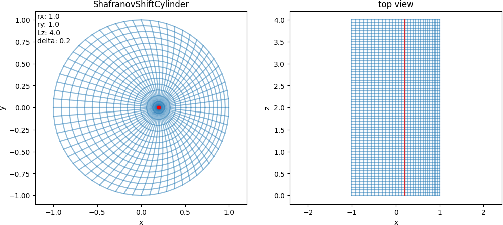
- Parameters:
rx (float) – Radius in x-direction (default: 1.0).
ry (float) – Radius in y-direction (default: 1.0).
Lz (float) – Length in z-direction (default: 4.0).
delta (float) – Shift factor, should be in [0, 0.1] (default: 0.2).
Note
In the parameter .yml, use the following in the section geometry:
geometry : type : ShafranovShiftCylinder ShafranovShiftCylinder : rx : 1. # axis length ry : 1. # axis length Lz : 4. # length in z-direction delta : .2 # shift factor, should be in [0, 0.1]
- class struphy.geometry.domains.ShafranovSqrtCylinder(rx: float = 1.0, ry: float = 1.0, Lz: float = 4.0, delta: float = 0.2)[source]#
Bases:
DomainCylinder with square-root Shafranov shift.
\[\begin{split}F: \begin{bmatrix}\eta_1\\ \eta_2\\ \eta_3\end{bmatrix}\mapsto \begin{bmatrix} \,\,x= &r_x\,\eta_1\cos(2\pi\,\eta_2)+(1-\sqrt \eta_1)r_x\Delta\,\,\\ \,\,y= &r_y\,\eta_1\sin(2\pi\,\eta_2)\,\,\\ \,\,z= &L_z\,\eta_3\,\,\end{bmatrix}\end{split}\]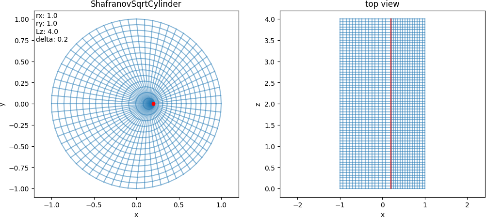
- Parameters:
rx (float) – Radius in x-direction (default: 1.0).
ry (float) – Radius in y-direction (default: 1.0).
Lz (float) – Length in z-direction (default: 4.0).
delta (float) – Shift factor, should be in [0, 0.1] (default: 0.2).
Note
In the parameter .yml, use the following in the section geometry:
geometry : type : ShafranovSqrtCylinder ShafranovSqrtCylinder : rx : 1. # axis length ry : 1. # axis length Lz : 4. # length in third direction delta : .2 # shift factor, should be in [0, 0.1]
- class struphy.geometry.domains.ShafranovDshapedCylinder(R0: float = 2.0, Lz: float = 3.0, delta_x: float = 0.1, delta_y: float = 0.0, delta_gs: float = 0.33, epsilon_gs: float = 0.32, kappa_gs: float = 1.7)[source]#
Bases:
DomainCylinder with D-shaped cross section and quadratic Shafranov shift.
\[\begin{split}F: \begin{bmatrix}\eta_1\\ \eta_2\\ \eta_3\end{bmatrix}\mapsto \begin{bmatrix} \,\,x= &R_0\left[1 + (1 - \eta_1^2)\Delta_x + \eta_1\epsilon\cos(2\pi\,\eta_2 + \arcsin(\delta)\eta_1\sin(2\pi\,\eta_2)) \right]\,\,\\ \,\,y= &R_0\left[ (1 - \eta_1^2)\Delta_y + \eta_1\epsilon\kappa\sin(2\pi\,\eta_2)\right]\,\,\\ \,\,z= &L_z\,\eta_3\,\,\end{bmatrix}\end{split}\]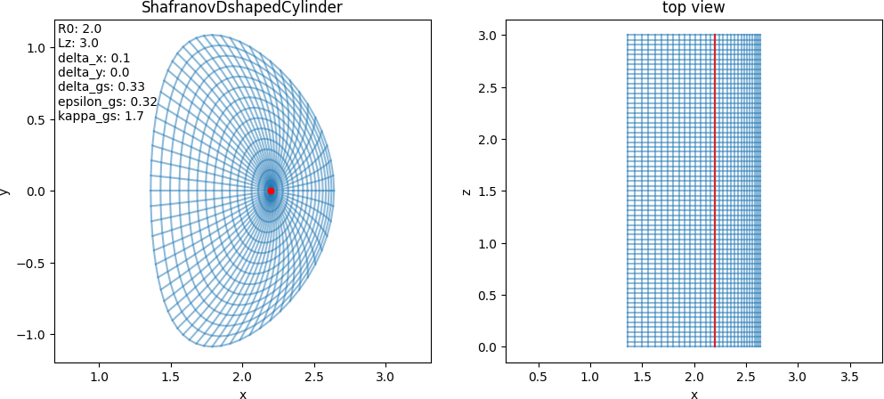
- Parameters:
R0 (float) – Base radius (default: 2.).
Lz (float) – Length in z-direction (default: 4.).
delta_x (float) – Shafranov shift in x-direction (default: 0.05).
delta_y (float) – Shafranov shift in y-direction (default: 0.025).
delta_gs (float) – Delta = sin(alpha): triangularity, shift of high point (default: 0.05).
epsilon_gs (float) – Epsilon: inverse aspect ratio a/r0 (default: 0.5).
kappa_gs (float) – Kappa: ellipticity (elongation) (default: 2.).
Note
In the parameter .yml, use the following in the section geometry:
geometry : type : ShafranovDshapedCylinder ShafranovDshapedCylinder : R0 : 2. # base radius Lz : 4. # length in third direction delta_x : .05 # Shafranov shift in x-direction delta_y : .025 # Shafranov shift in y-direction delta_gs : .05 # delta = sin(alpha): triangularity, shift of high point epsilon_gs : .5 # epsilon: inverse aspect ratio a/r0 kappa_gs : 2. # Kappa: ellipticity (elongation)